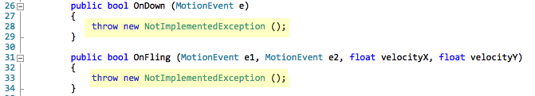

Duration
15 minutes
Goals
The primary goal of this lab will be to create an app which utilizes the OnScroll gesture to move an image on screen.

Required assets
There are some Assets required to complete this exercise in the Exercise 1 folder. There is also completed solution which you can use to check your work when you are finished.
Challenge
Use the following steps to complete the challenge exercise, referring to the AND241 - Gestures slides for guidance. If you need more information, detailed instructions are provided below.
- Create a new Android project and remove boiler-plate code
- Add the assets to the project in the Exercise 1 folder
- Add 4 class level variables to the Activity; a gesture detector, and image view and two floats track position
- Initialize the gesture detector in
OnCreateand get a reference to xamLogo - Implement
IOnGestureListenerin MainActivity - Update the position of xamLogo in the
OnScrollmethod - Pass
MotionEvents to the gesture detector by overridingOnTouch
Steps
You can either use the above steps and work through the exercise, or follow the step-by-step instructions shown here.
Create a new Android project
- Create a new Blank Android App.
- Open MainActivity.cs.
- Remove the "boiler-plate" code from MainActivity.cs:
- Delete the integer
countdeclaration. - Delete the
Buttoncode from theOnCreatemethod.
- Delete the integer
- Delete Main.xaml from the Resources -> layout project folder.
Add Assets to the project
- Add Main.axml to the Resources -> layout project folder.
- Add xamlogo.png to the Resources -> drawable.
Add Gesture detector variables
Next we'll add several class level variables to MainActivity. One for the gesture detector, one to reference the onscreen image, and two float values to track gesture position changes.
- Add a class level
GestureDetectorvariable named gestureDetector. - Add an
ImageViewnamed xamLogo. - Add two floats named deltaX, and deltaY.
Initialize variables
- In the
OnCreatemethod, instantiate gestureDetector using MainActivity as the context and the listener. - Again in
OnCreate, get a reference to theImageViewdefined in Main.xaml, it's Id is xamLogo.
Implement IOnGestureListener
- Add
IOnGestureListenerto the class definition, you may need to qualify theGestureDetectornamespace. - Implement
IOnGestureListenerIn Visual Studio for Mac, Right-click on the interface and select Refactor -> Implement Interface
In Visual Studio you can use the CTRL+ keyboard shortcut. - Add the methods required by
IOnGestureListenerpublic bool OnDown (MotionEvent e)public bool OnFling (MotionEvent e1, MotionEvent e2, float velocityX, float velocityY)public void OnLongPress (MotionEvent e)public bool OnScroll (MotionEvent e1, MotionEvent e2, float distanceX, float distanceY)public void OnShowPress (MotionEvent e)public bool OnSingleTapUp (MotionEvent e)
- If you used any tooling to implement the interface, remove the
NotImplementedexceptions. - Return
falsefor any required methods.

Update the image position
We only need to use 1 of the methods defined in IOnGestureListener: OnScroll.
Here we'll track position changes and update the location of Xamarin logo image by setting its X & Y translations.
The distanceX and distanceY parameters give us distance moved since the last time OnScroll was called.
- Subtract distanceX from detlaX.
- Subtract distanceY from detlaY.
- Set the xamLogo
TranslationXandTranslationYproperties using deltaX and deltaY.
Pass MotionEvents to the gesture recognizer
The last step is to pass the touch information to the gesture recognizer.
- Override
OnTouchEvent. - Pass the
MotionEventto gestureDector by calling itsOnTouchEventmethod. - Run the app and try moving the image.
Summary
In this exercise you have created an Android application, which utilizes a gesture detector to translate an image on screen.